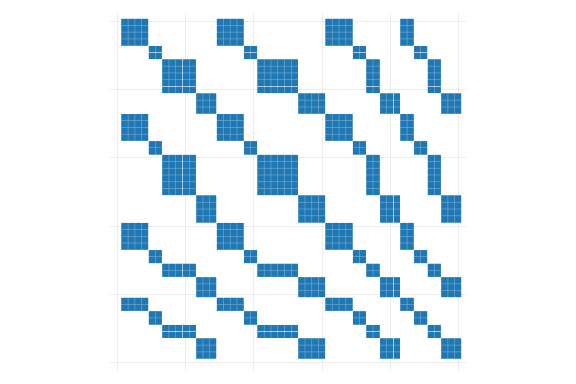
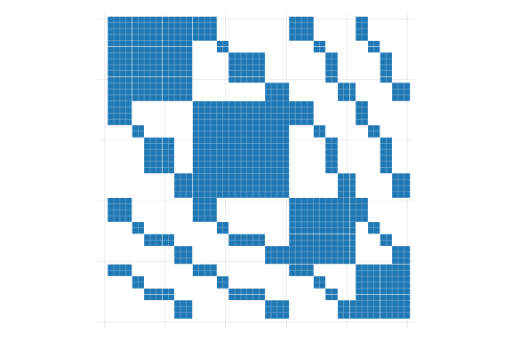

Linear regressions (LR) are a fundamental tool for economists to analyze data. Among the various methods for estimating the corresponding parameters, the most commonly used is Ordinary Least Squares (OLS). When certain assumptions are met1 , OLS can provide unbiased and consistent estimates of how changes in independent variables (\(X's\)) affect the dependent variable (\(y\)), assuming that all other factors remain constant. One advantage of OLS is that it is easy to apply and provides a straightforward solution.
Consider the following linear model (in matrix form), and assume all Classical LR assumtions hold:
\[y =X \beta + e
\]
If that is the case, the OLS estimator for \(\beta's\) is simply given by:
\[
\hat \beta_{OLS}=(X'X)^{-1}X'y
\]
Which is one of those formulas you probably know by memory by know. Something else you can derive from here is the relationship between the estimate \(\hat\beta\) and the true \(\beta\):
Which simply states that \(\hat\beta\) will be unbiased if \(E((X'X)^{-1}X'e)=0\). But other wise, when using samples, there will be small differences because of the sampling error.
How precise are our estimates?
The last expression has an additional value. It shows that the estimated coefficient \(\hat\beta\) can vary across samples, it also provides us a clue of how to measure the precision of that estimate.
Specifically, if we apply \(Var()\) to both sides of the equation, we will have:
Assuming that \(X's\) are fixed, we can rewrite this equation into the Variance covariance matrix we are accostume to: \[Var(\hat\beta_{OLS})=Var(\beta) +(X'X)^{-1}X' Var(e) X (X'X)^{-1}
\]
Where \(Var(e)\) is not necessarity the ovarall variance of \(e_i\). Instead is the \(N\times N\) variance convariance matrix that combines the information of all observations in a sample.
This may be somewhat less intuive, and will require a bit of an stretch. In a crossectional sample, we only observe a unit once, but in theory, what we observe is just one of many possible states that unit could have been at. At each one of those, that unit may have received a different \(e_i\). Thus, if we could see all those states, it would be possible to obtain units own unobservable variance \(\sigma^2_i\), and its correlation with other units \(\sigma_{ij}\).
But let me make one last change and substitute \(Var(e)\) with \(\Omega\), so we have the more traditional formula: \[
Var(\hat\beta_{OLS}) = \color{brown}{(X'X)^{-1}} \color{green}{X'} \color{red} \Omega \color{green}{X}\color{brown}{(X'X)^{-1}}
\]
Which is usually described as the Sandwich formula. Because of this, I color coded the components.
\(\color{brown}{(X'X)^{-1}}\): Is the Bread
\(\color{green}{X'}\): Is the Lettuce
\(\color{red} \Omega\): The best part of the Sandwich, the meat! And Of course, depending on the kind of meat we use, we would have different kind of sandwiches, or in this case different types of Standard errors.
So let us go ahead and revise the different types of Standard erros we can get from this expression. In what follows, however, I will omit any degrees of freedom correction, to simplify some of the expressions
Homoskedastic Standard errors
The first type of Standard errors we learn in Econometrics 101, is the one based on the assumption of homoskedasticity and no cross-units correlation. This means that:
Unobservables \(e\) that affect unit \(i\) are completely independent from the unobservables that affect unit \(j\).
And that the magnitud or variance of the unobservables is the same across all individuals.
And of course simplyfies the Variance-covariance of the \(\beta\) coefficients to:
\[Var(\hat\beta_{OLS})_0 = (X'X)^{-1} X'\sigma^2 I(N) X (X'X)^{-1}=\sigma^2 (X'X)^{-1}
\]
Robust Standard errors
Now, Robust standard errors, also known as Huber-White Robust standard errors, lifts one of the assumptions compared to the previous case. It explicitly allows for the variance of the errors to be different across individuals, while still imposing no correlation across individuals. \[
\begin{aligned}
\sigma_{ij} &=0 \ \forall \ i\neq j \\
\exists i,j &:\sigma^2_{i}\neq \sigma^2_{j}
\end{aligned}
\]
This does not mean that the variance will always be different when comparing two units, just that they could be different. With this conditions, we can partially simply the \(\Omega\) matrix. However, I will not show any further simplications for the variance of \(\beta's\)\[
\Omega_1 =
\left(
\begin{matrix}
\sigma_1^2 & 0 & 0 & ... & 0 \\
0 & \sigma_2^2 & 0 & ... & 0 \\
0 & 0 & \sigma_3^2 & ... & 0 \\
... & ... & ... & ...& ... \\
0 & 0 & 0 & ... & \sigma_n^2 \\
\end{matrix}\right)
\]
1-way Cluster Standard errors
Cluster standard errors lifts an additional assumption to how the variance covariance matrix should be estimated. In contrast with robust standard errors, cluster standard errors assumes that the unobservables are not necessarily independent across units.
For example, people within the same family will share similar experiences, thus their unobservables will be correlated. Same for students in the same classrooms, because they share the same “teacher exprience”, or workers in the same firm, because they face the same work enviroment.
We, of course, still need to impose some restrictions on the data.
First, as most software was imposing until few years ago, we assume that there is only 1 dimension that individuals could be related to each other.
Second, we still need to assume that if individuals do not belong to the same “group”, their errors are still independent.
To show this mathematically, let me define the function \(g()\), which gives me the group membership of unit \(i\). In other words, if unit \(i\) belongs to family \(k\), then \(g(i)=k\). With this function, we can define the correlations across individuals to be defined as: \[
\begin{aligned}
\sigma_{i,j} \neq 0 \text{ if } g(i)=g(j)
\end{aligned}
\]
In this case, the \(\Omega\) matrix will look very similar to the one we use for robust standard errors. It will still be block diagonal, with the main diagonal having block elements different from zero (\(\Sigma_j\)), and all other elements outside the diagonal to be zero: \[
\Omega_2 =
\left(
\begin{matrix}
\sigma_1^2 & \sigma_{1,2} & 0 & ... & 0 \\
\sigma_{1,2} & \sigma_2^2 & 0 & ... & 0 \\
0 & 0 & \sigma_3^2 & ... & \sigma_{3,n} \\
... & ... & ... & ... & ... \\
0 & 0 & \sigma_{3,n} & ... & \sigma_n^2 \\
\end{matrix}\right) =
\left(
\begin{matrix}
\Sigma_1 & 0 \\
0 & \Sigma_2 \\
\end{matrix}\right)
\]
In this figure, the blue blocks shows that we are allowing for some non-zero correlation among observations that belong to the same group or cluster. Implicily, we are also allowing for all elements of the main diagonal (in black) to be different from zero, which is why Cluster standard errors are also robust to heteroskedasticity.
2-way Cluster Standard Errors
What about 2-way, or for even M-way, clustered standard errors?
As I mentioned above, 1-way clustered standard errors allows for individuals unobserved errors to be correlated across each other, but only if they belong to the same group. If they are from different groups, then no correlation should exists. 1-Way cluster standard errors also assumes that there is only one set of groups that people can be connected through.
This assumption is also quite strong. People, for example, are interconnected through many chanels. My unobserved factors are likely to be related to my wife’s and daughter’s unobservables, because we belong to the same household. However, they may also be related to my co-workers, because we all have the same workplace, thus share similar experience. I cannot discard my grad-school peers, since we have shared experiences (and thus correlated unobservables). Some of this connections would be new and unique, but some others may overlap.
The good news is that 2-way cluster standard errors, or M-way, does allow for this more complex scenario. Specifically, if two individuals are part of at least 1 common group, then we will assume the correlation of unobserved factors is different from zero. Unfortunately, we cannot differentiate which connection is the one that is driven that correlation.
To show this mathematically, let me define the function \(g_h()\), which indicates the group, among the set \(h\) (cluster variable), that a unit belongs to, and \(gg(i,j)\) which takes the value of zero if \(i\) and \(j\) are not connected to each other in any way (based on the cluster variables), and 1 otherwise. \[
\begin{aligned}
gg(i,j)&=0 \text{ if } \forall h:g_h(i)\neq g_h(j) \\
&\text{ and 1 otherwise}
\end{aligned}
\]
If this is the case, \(\sigma_{ij}=0\) is assumed zero if \(gg(i,j)=0\), but allow to vary otherwise.
The implications that it has on the \(\Omega\) matrix is that it will no longer be block diagonal, because elements outside the main diagonal (and block diagonal) will be different from zero. \[\Omega_3 =
\left(
\begin{matrix}
\sigma_1^2 & \sigma_{1,2} & 0 & ... & \sigma_{1,n} \\
\sigma_{1,2} & \sigma_2^2 & \sigma_{2,3} & ... & 0 \\
0 & \sigma_{2,3} & \sigma_3^2 & ... & \sigma_{3,n} \\
... & ... & ... & ... & ... \\
\sigma_{1,n} & 0 & \sigma_{3,n} & ... & \sigma_n^2 \\
\end{matrix}\right)
\]
Its perhaps easier to show this visually:
Code
two (scatter rr11 rr12 if rr13==1, ms(s) msize(2.1)) /// , aspect(1) legend(off) xtitle("") ytitle("") yscale(off) xscale(off) name(m1, replace) two (scatter rr11 rr12 if rr14==1, ms(s) msize(2.1)) /// , aspect(1) legend(off) xtitle("") ytitle("") yscale(off) xscale(off) name(m2, replace) two (scatter rr11 rr12 if rr14==1 | rr13==1, ms(s) msize(2.1)) /// , aspect(1) legend(off) xtitle("") ytitle("") yscale(off) xscale(off) name(m3, replace)
(a) 1-way cluster

(b) 2nd 1-way cluster

(c) 2-way cluster
Figure 1: Correlation matrix \(\Omega\)
Figure 1 shows the correlation structure we would observe considering the 2 clustered variables. Figure 1 (a) and Figure 1 (b) show the interconnections based on a first and a second cluster variables, whereas Figure 1 (c) considers the combination of both. To estimate Standard errors we need to allow the blue cells to be different from zero, impossing the zero condition only on the “unconnected” pairs.
How to estimate \(\sigma_{ij}\)?
Up to this point, I have shown how one should think about the estimation of Standard errors. But you may also be interested in the practical approach. Specifically, how do we come up with estimates for \(\sigma_i^2\) and \(\sigma_{ij}\).?
This is actually straight forward!. Since we only see each unit once in crossection, our best estimation of terms is given by: \[
\hat \sigma_{ij} = \varepsilon_i*\varepsilon_j
\]
where \(\varepsilon_i\) is the unit specific unobserved component. So that is pretty much it! once you have \(\hat \sigma_{ij}\) you simply need to define which assumption you want to use (homoskedastic errors, heteroskedastic, or clustered), identify which elements you will assume to be zero, and voila!…
Or almost. While what I describe here is technically correct, there are two limitations to its application compared to how is it done in most software.
I’m disregarding completely the role of degrees of freedom and corresponding corrections.
The estimation of \(\hat\Omega\) as described here is only feasible for small datasets, because it suggest creating a \(N\times N\) matrix. This would easily consume all the resources of your computer.
Regarding point 2. While there are other ways to simply the math, thinking in terms of the unrestricted \(\Omega\) is useful to understand the role of clustering and two way clustering in the data.
Stata Example
Here I will work on a small example that would implement the 4 approaches to estimating standard errors. Because I will use the unrestrict \(\hat\Omega\) matrix, I will work with a very small dataset: `auto’. The next contains lots of code, so feel free to skip it.
** Load Data, create clusters and a constantsysuse auto, clearsetseed 1replace price = price / 1000gen one = 1gen c1 = runiformint(1,5)gen c2 = runiformint(1,5)** Load Data to Mata to easy manipulationmata: y = st_data(.,"price")mata: x = st_data(.,"mpg one")** estimate betas, ixx, and errosmata: xx = cross(x,x); ixx = invsym(xx);xy=cross(x,y)mata: b = ixx * xy ; e = y:-x*b
(1978 automobile data)
variable price was int now float
(74 real changes made)
But for the 2-way Cluster Standard errors you also have the more commonly used formula:
** First we need to create a variable that combines both clustersmata: i4 = i1:&i2mata: omega_4 = (e*e'):*i4mata: vcv_aux = ixx * x' * omega_4 * x * ixxmata: vcv_4 = vcv_2a + vcv_2b - vcv_auxmata: svcv_4 = diagonal(vcv_4):^.5; svcv_4
In this note, I provide a walkthrough the estimation of different types of standard errors from a linear regression model.
While most textbooks already cover the basics of standard errors under homoskedasticity, heteroskedasticity, and oneway clustered errors, I have not seen an intuitive approach to understanding w-way clustered standard errors.
As I shown here, the idea of 2-way, or M-way, clustered standard errors is to allow arbitrary correlations across individuals, if they have to at least one common group (one cluster variable).
Now, one may be tempted to try and use this approach to allow for unconstrained correlation across all units. After all we are all connected to some way. However, because we do not see the true unobserved variance-covariance matrix, the variance of \(\beta\) would not be identified without impossing restrictions on \(\Omega\).
If you are interested in learning more about this topic, I would recommend you to read Cameron, Gelbach, and Miller (2011), MacKinnon, Nielsen, and Webb (2023) and Abadie et al. (2022).
References
Abadie, Alberto, Susan Athey, Guido W Imbens, and Jeffrey M Wooldridge. 2022. “When ShouldYouAdjustStandardErrors for Clustering?”The Quarterly Journal of Economics 138 (1): 1–35. https://doi.org/10.1093/qje/qjac038.
Cameron, A. Colin, Jonah B. Gelbach, and Douglas L. Miller. 2011. “Robust InferenceWithMultiwayClustering.”Journal of Business & Economic Statistics 29 (2): 238–49. https://doi.org/10.1198/jbes.2010.07136.
MacKinnon, James G., Morten Ørregaard Nielsen, and Matthew D. Webb. 2023. “Cluster-Robust Inference: A Guide to Empirical Practice.”Journal of Econometrics 232 (2): 272–99. https://doi.org/10.1016/j.jeconom.2022.04.001.
Footnotes
See for example Introductory Econometrics: A Modern Approach by Jeffery Wooldridge↩︎
Source Code
---title: "Linear Regressions, OLS and Standard Errors"format: htmlbibliography: references.bib---## IntroductionLinear regressions (**LR**) are a fundamental tool for economists to analyze data. Among the various methods for estimating the corresponding parameters, the most commonly used is Ordinary Least Squares (**OLS**). When certain assumptions are met^[See for example Introductory Econometrics: A Modern Approach by Jeffery Wooldridge] , OLS can provide unbiased and consistent estimates of how changes in independent variables ($X's$) affect the dependent variable ($y$), assuming that all other factors remain constant. One advantage of OLS is that it is easy to apply and provides a straightforward solution. Consider the following linear model (in matrix form), and assume all Classical LR assumtions hold:$$y =X \beta + e$$If that is the case, the OLS estimator for $\beta's$ is simply given by:$$\hat \beta_{OLS}=(X'X)^{-1}X'y$$Which is one of those formulas you probably know by memory by know. Something else you can derive from here is the relationship between the estimate $\hat\beta$ and the true $\beta$:$$\begin{aligned}\hat \beta_{OLS}&=(X'X)^{-1}X'(X\beta + e) \\ &=(X'X)^{-1}X'X\beta + (X'X)^{-1}X'e \\ &= \beta + (X'X)^{-1}X'e\end{aligned}$$Which simply states that $\hat\beta$ will be unbiased if $E((X'X)^{-1}X'e)=0$. But other wise, when using samples, there will be *small* differences because of the sampling error. ## How precise are our estimates?The last expression has an additional value. It shows that the estimated coefficient $\hat\beta$ can vary across samples, it also provides us a clue of how to measure the precision of that estimate.Specifically, if we apply $Var()$ to both sides of the equation, we will have:$$\begin{aligned}Var(\hat\beta_{OLS})=Var(\beta + (X'X)^{-1}X'e) \\Var(\hat\beta_{OLS})=Var(\beta) +Var((X'X)^{-1}X'e) \end{aligned}$$Assuming that $X's$ are fixed, we can rewrite this equation into the Variance covariance matrix we are accostume to:$$Var(\hat\beta_{OLS})=Var(\beta) +(X'X)^{-1}X' Var(e) X (X'X)^{-1}$$Where $Var(e)$ is not necessarity the ovarall variance of $e_i$. Instead is the $N\times N$ variance convariance matrix that combines the information of all observations in a sample.$$Var(e) = \left(\begin{matrix}\sigma^2_1 & \sigma_{1,2} & \sigma_{1,3} & ... & \sigma_{1,n} \\\sigma_{1,2} & \sigma_2^2 & \sigma_{2,3} & ... & \sigma_{2,n} \\\sigma_{1,3} & \sigma_{2,3} & \sigma^2_{3} & ... & \sigma_{3,n} \\... & ... & ... & ...& ... \\\sigma_{1,n} & \sigma_{n,2} & \sigma_{n,3} & ... & \sigma^2_{n} \\\end{matrix}\right)$$This may be somewhat less intuive, and will require a bit of an stretch. In a crossectional sample, we only observe a unit once, but in theory, what we observe is just one of many possible states that unit could have been at. At each one of those, that unit may have received a different $e_i$. Thus, if we could see all those states, it would be possible to obtain units own unobservable variance $\sigma^2_i$, and its correlation with other units $\sigma_{ij}$.But let me make one last change and substitute $Var(e)$ with $\Omega$, so we have the more traditional formula:$$Var(\hat\beta_{OLS}) = \color{brown}{(X'X)^{-1}} \color{green}{X'} \color{red} \Omega \color{green}{X}\color{brown}{(X'X)^{-1}}$$Which is usually described as the **Sandwich** formula. Because of this, I color coded the components.- $\color{brown}{(X'X)^{-1}}$: Is the Bread- $\color{green}{X'}$: Is the Lettuce - $\color{red} \Omega$: The best part of the **Sandwich**, the meat! And Of course, depending on the kind of **meat** we use, we would have different kind of sandwiches, or in this case different types of Standard errors.So let us go ahead and revise the different types of Standard erros we can get from this expression. In what follows, however, I will omit any degrees of freedom correction, to simplify some of the expressions## Homoskedastic Standard errorsThe first type of Standard errors we learn in Econometrics 101, is the one based on the assumption of homoskedasticity and no cross-units correlation. This means that:- Unobservables $e$ that affect unit $i$ are completely independent from the unobservables that affect unit $j$.- And that the magnitud or variance of the unobservables is the same across all individuals.Mathematically this means:$$\begin{aligned}\sigma_i^2 &=\sigma_j^2 = \sigma^2 \\\sigma_{ij} &=0 \ \forall \ i\neq j\end{aligned}$$Which simplifies greatly the $\Omega$ matrix:$$\Omega_0 = \left(\begin{matrix}\sigma^2 & 0 & 0 & ... & 0 \\0 & \sigma^2 & 0 & ... & 0 \\0 & 0 & \sigma^2 & ... & 0 \\... & ... & ... & ...& ... \\0 & 0 & 0 & ... & \sigma^2 \\\end{matrix}\right)= \sigma^2 I(N) $$And of course simplyfies the Variance-covariance of the $\beta$ coefficients to:$$Var(\hat\beta_{OLS})_0 = (X'X)^{-1} X'\sigma^2 I(N) X (X'X)^{-1}=\sigma^2 (X'X)^{-1}$$## Robust Standard errorsNow, Robust standard errors, also known as Huber-White Robust standard errors, lifts one of the assumptions compared to the previous case. It explicitly allows for the variance of the errors to be different across individuals, while still imposing no correlation across individuals.$$\begin{aligned}\sigma_{ij} &=0 \ \forall \ i\neq j \\\exists i,j &:\sigma^2_{i}\neq \sigma^2_{j}\end{aligned}$$This does not mean that the variance will always be different when comparing two units, just that they *could* be different. With this conditions, we can partially simply the $\Omega$ matrix. However, I will not show any further simplications for the variance of $\beta's$$$\Omega_1 =\left(\begin{matrix}\sigma_1^2 & 0 & 0 & ... & 0 \\0 & \sigma_2^2 & 0 & ... & 0 \\0 & 0 & \sigma_3^2 & ... & 0 \\... & ... & ... & ...& ... \\0 & 0 & 0 & ... & \sigma_n^2 \\\end{matrix}\right)$$## 1-way Cluster Standard errorsCluster standard errors lifts an additional assumption to how the variance covariance matrix should be estimated. In contrast with robust standard errors, cluster standard errors assumes that the unobservables are not necessarily independent across units.For example, people within the same family will share similar experiences, thus their unobservables will be correlated. Same for students in the same classrooms, because they share the same "teacher exprience", or workers in the same firm, because they face the same work enviroment. We, of course, still need to impose some restrictions on the data.- First, as most software was imposing until few years ago, we assume that there is only 1 dimension that individuals could be related to each other. - Second, we still need to assume that if individuals do not belong to the same "group", their errors are still independent.To show this mathematically, let me define the function $g()$, which gives me the group membership of unit $i$. In other words, if unit $i$ belongs to family $k$, then $g(i)=k$. With this function, we can define the correlations across individuals to be defined as:$$\begin{aligned}\sigma_{i,j} \neq 0 \text{ if } g(i)=g(j)\end{aligned}$$In this case, the $\Omega$ matrix will look very similar to the one we use for robust standard errors. It will still be block diagonal, with the main diagonal having **block** elements different from zero ($\Sigma_j$), and all other elements outside the diagonal to be zero:$$\Omega_2 =\left(\begin{matrix}\sigma_1^2 & \sigma_{1,2} & 0 & ... & 0 \\\sigma_{1,2} & \sigma_2^2 & 0 & ... & 0 \\0 & 0 & \sigma_3^2 & ... & \sigma_{3,n} \\... & ... & ... & ... & ... \\0 & 0 & \sigma_{3,n} & ... & \sigma_n^2 \\\end{matrix}\right) =\left(\begin{matrix}\Sigma_1 & 0 \\0 & \Sigma_2 \\\end{matrix}\right)$$Visually, this would look like the following```{stata}*| echo: true*| code-fold: true*| fig-cap: Correlation matrix $\Omega$clearset scheme white2color_style tableauset seed 1set obs 50gen r1=runiformint(1,4)gen r2=runiformint(1,4)gen id=_nsort r1 r2qui:mata:r1=st_data(.,"r1")r2=st_data(.,"r2")rr1=J(rows(r1)*rows(r2),4,0)k=0for(i=1;i<=50;i++){ for(j=1;j<=50;j++){ if ((r1[i]==r1[j]) | (r2[i]==r2[j])) { k++ rr1[k,]=(51-i,j,(r1[i]==r1[j]),(r2[i]==r2[j]) ) } } }rr1=rr1[1..k,]endgetmata rr1*=rr1, replace forcetwo (scatter rr11 rr12 if rr13==1, ms(s) msize(2.1)) /// (scatter rr11 rr12 if 51-rr11 == rr12, ms(s) msize(2.1) color(gs1) ) /// , aspect(1) legend(off) xtitle("") ytitle("") yscale(off) xscale(off)```In this figure, the blue blocks shows that we are allowing for some non-zero correlation among observations that belong to the same group or **cluster**. Implicily, we are also allowing for all elements of the main diagonal (in black) to be different from zero, which is why Cluster standard errors are also robust to heteroskedasticity.## 2-way Cluster Standard ErrorsWhat about 2-way, or for even M-way, clustered standard errors?As I mentioned above, 1-way clustered standard errors allows for individuals unobserved errors to be correlated across each other, but only if they belong to the same group. If they are from different groups, then no correlation should exists. 1-Way cluster standard errors also assumes that there is only one set of groups that people can be connected through. This assumption is also quite strong. People, for example, are interconnected through many chanels. My unobserved factors are likely to be related to my wife's and daughter's unobservables, because we belong to the same household. However, they may also be related to my co-workers, because we all have the same workplace, thus share similar experience. I cannot discard my grad-school peers, since we have shared experiences (and thus correlated unobservables). Some of this connections would be new and unique, but some others may overlap. The good news is that 2-way cluster standard errors, or M-way, does allow for this more complex scenario. Specifically, if two individuals are part of at least 1 common group, then we will assume the correlation of unobserved factors is different from zero. Unfortunately, we cannot differentiate which **connection** is the one that is driven that correlation.To show this mathematically, let me define the function $g_h()$, which indicates the group, among the set $h$ (cluster variable), that a unit belongs to, and $gg(i,j)$ which takes the value of zero if $i$ and $j$ are not connected to each other in any way (based on the cluster variables), and 1 otherwise. $$\begin{aligned}gg(i,j)&=0 \text{ if } \forall h:g_h(i)\neq g_h(j) \\&\text{ and 1 otherwise}\end{aligned}$$If this is the case, $\sigma_{ij}=0$ is assumed zero if $gg(i,j)=0$, but allow to vary otherwise.The implications that it has on the $\Omega$ matrix is that it will no longer be block diagonal, because elements outside the main diagonal (and block diagonal) will be different from zero.$$\Omega_3 =\left(\begin{matrix}\sigma_1^2 & \sigma_{1,2} & 0 & ... & \sigma_{1,n} \\\sigma_{1,2} & \sigma_2^2 & \sigma_{2,3} & ... & 0 \\0 & \sigma_{2,3} & \sigma_3^2 & ... & \sigma_{3,n} \\... & ... & ... & ... & ... \\\sigma_{1,n} & 0 & \sigma_{3,n} & ... & \sigma_n^2 \\\end{matrix}\right)$$Its perhaps easier to show this visually:```{stata}*| echo: true*| code-fold: true*| label: fig-corr*| fig-cap: Correlation matrix $\Omega$*| fig-subcap:*| - 1-way cluster*| - 2nd 1-way cluster*| - 2-way cluster*| fig-align: centertwo (scatter rr11 rr12 if rr13==1, ms(s) msize(2.1)) /// , aspect(1) legend(off) xtitle("") ytitle("") yscale(off) xscale(off) name(m1, replace) two (scatter rr11 rr12 if rr14==1, ms(s) msize(2.1)) /// , aspect(1) legend(off) xtitle("") ytitle("") yscale(off) xscale(off) name(m2, replace) two (scatter rr11 rr12 if rr14==1 | rr13==1, ms(s) msize(2.1)) /// , aspect(1) legend(off) xtitle("") ytitle("") yscale(off) xscale(off) name(m3, replace)```@fig-corr shows the correlation structure we would observe considering the 2 clustered variables. @fig-corr-1 and @fig-corr-2 show the interconnections based on a first and a second cluster variables, whereas @fig-corr-3 considers the combination of both. To estimate Standard errors we need to allow the *blue* cells to be different from zero, impossing the zero condition only on the "unconnected" pairs.## How to estimate $\sigma_{ij}$?Up to this point, I have shown how one should think about the estimation of Standard errors. But you may also be interested in the practical approach. Specifically, how do we come up with estimates for $\sigma_i^2$ and $\sigma_{ij}$.?This is actually straight forward!. Since we only see each unit once in crossection, our best estimation of terms is given by:$$\hat \sigma_{ij} = \varepsilon_i*\varepsilon_j$$where $\varepsilon_i$ is the unit specific unobserved component. So that is pretty much it! once you have $\hat \sigma_{ij}$ you simply need to define which assumption you want to use (homoskedastic errors, heteroskedastic, or clustered), identify which elements you will assume to be zero, and voila!...Or almost. While what I describe here is technically correct, there are two limitations to its application compared to how is it done in most software.1. I'm disregarding completely the role of degrees of freedom and corresponding corrections. 2. The estimation of $\hat\Omega$ as described here is only feasible for small datasets, because it suggest creating a $N\times N$ matrix. This would easily consume all the resources of your computer.Regarding point 2. While there are other ways to simply the math, thinking in terms of the unrestricted $\Omega$ is useful to understand the role of clustering and two way clustering in the data.## `Stata` ExampleHere I will work on a small example that would implement the 4 approaches to estimating standard errors. Because I will use the unrestrict $\hat\Omega$ matrix, I will work with a very small dataset: `auto'. The next contains lots of code, so feel free to skip it.```{stata}*| echo: true*| code-fold: false** Load Data, create clusters and a constantsysuse auto, clearset seed 1replace price = price / 1000gen one = 1gen c1 = runiformint(1,5)gen c2 = runiformint(1,5)** Load Data to Mata to easy manipulationmata: y = st_data(.,"price")mata: x = st_data(.,"mpg one")** estimate betas, ixx, and errosmata: xx = cross(x,x); ixx = invsym(xx);xy=cross(x,y)mata: b = ixx * xy ; e = y:-x*b```Homoskedastic errors: ```{stata}*| echo: true*| code-fold: falsemata: omega_0 = I(74)*mean(e:^2)mata: vcv_0 = ixx * x' * omega_0 * x * ixxmata: svcv_0 = diagonal(vcv_0):^.5;svcv_0```Robust Standard errors```{stata}*| echo: true*| code-fold: falsemata: omega_1 = (e*e'):*I(74)mata: vcv_1 = ixx * x' * omega_1 * x * ixxmata: svcv_1 = diagonal(vcv_1):^.5;svcv_1```1-way Cluster Standard errors:```{stata}*| echo: true*| code-fold: falsemata: cc = st_data(.,"c1 c2")mata: i1 = J(1,74,cc[,1]):==J(74,1,cc[,1]') mata: i2 = J(1,74,cc[,2]):==J(74,1,cc[,2]') mata: omega_2a = (e*e'):*i1; omega_2b = (e*e'):*i2mata: vcv_2a = ixx * x' * omega_2a * x * ixxmata: vcv_2b = ixx * x' * omega_2b * x * ixxmata: svcv_2a = diagonal(vcv_2a):^.5mata: svcv_2b = diagonal(vcv_2b):^.5mata: svcv_2a, svcv_2b ```2-way Cluster Standard errors```{stata}*| echo: true*| code-fold: falsemata: i3 = i1:|i2mata: omega_3 = (e*e'):*i3mata: vcv_3 = ixx * x' * omega_3 * x * ixxmata: svcv_3 = diagonal(vcv_3):^.5; svcv_3```But for the 2-way Cluster Standard errors you also have the more commonly used formula:```{stata}*| echo: true*| code-fold: false** First we need to create a variable that combines both clustersmata: i4 = i1:&i2mata: omega_4 = (e*e'):*i4mata: vcv_aux = ixx * x' * omega_4 * x * ixxmata: vcv_4 = vcv_2a + vcv_2b - vcv_auxmata: svcv_4 = diagonal(vcv_4):^.5; svcv_4```## ConclusionsIn this note, I provide a walkthrough the estimation of different types of standard errors from a linear regression model.While most textbooks already cover the basics of standard errors under homoskedasticity, heteroskedasticity, and oneway clustered errors, I have not seen an intuitive approach to understanding w-way clustered standard errors. As I shown here, the idea of 2-way, or M-way, clustered standard errors is to allow arbitrary correlations across individuals, if they have to at least one common group (one cluster variable). Now, one may be tempted to try and use this approach to allow for unconstrained correlation across all units. After all we are all connected to some way. However, because we do not see the true unobserved variance-covariance matrix, the variance of $\beta$ would not be identified without impossing restrictions on $\Omega$.If you are interested in learning more about this topic, I would recommend you to read @cameron_robust_2011, @mackinnon_cluster-robust_2023 and @abadie_when_2022.